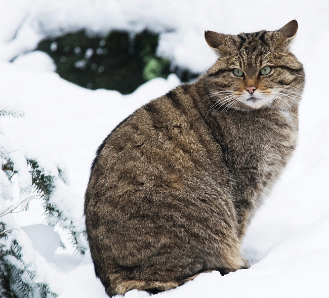
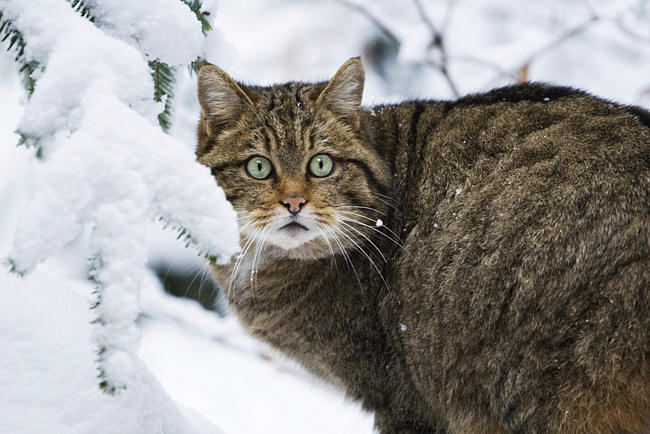

Дикий лесной кот

В названии этого вида недаром содержится слово дикий, ведь лесные коты являются прямыми предками домашних кошек. Чтобы не путать этих животных первозданную «дикость» лесных кошек подчеркнули названием. Ближайшими родственниками лесных кошек являются другие мелкие виды — степная и барханная кошки, камышовый кот и манул.
Облик диких лесных котов очень схож с короткошерстными домашними кошками: это довольно мелкий зверь весом 5-7 кг, с гибким туловищем, относительно короткими лапами и хвостом. Мордочка лесных кошек округлая, с небольшими треугольными ушами. Тело покрыто короткой, но густой шерстью рыжевато-серого цвета. На теле животного просматриваются более менее отчетливые поперечные полосы, на хвосте полосы становятся особенно заметными. Зубы у котов мелкие, но острые; лапы также вооружены острыми втяжными когтями.
В отличие от домашних кошек дикие выглядят более плотными, особенно коты.
Обитают эти животные в лесах Европы, Кавказа и на Британских о-вах. Лесные кошки предпочитают селиться в густых и нетронутых зарослях и, как ни странно, не тяготеют к человеческому жилью. Вообще, эти звери очень осторожные и довольно нелюдимые. Крики лесных кошек — хорошо знакомое мяуканье — можно услышать лишь в брачный период, в остальное время они молчаливы. Ведут они одиночный и сумеречный образ жизни, предпочитая выходить на охоту ночью, днем они скрываются в логове, обустроенном в зарослях камыша, покинутой норе или дупле.
Лесные кошки предпочитают ловить мелких грызунов и птиц, но иногда могут охотиться за зайцами. К своей жертве они подкрадываются, а затем настигают быстрым прыжком и душат. Ввиду того, что эти животные охотятся на мелкую добычу, они не делают запасов пищи и вынуждены выходить на охоту ежедневно.
В отличие от плодовитых домашних кошек, лесные коты размножаются лишь раз в году. Сезон размножения наступает конечно же в марте.
Беременность самок длится чуть больше двух месяцев. В апреле-мае кошка приносит 3-7 котят. Они рождаются слепыми и пробуют выходить из логова только через месяц.
Дикие кошки выкармливают котят молоком очень долго — до четырех месяцев. Котята и молодые кошки часто гибнут от зубов более крупных хищников, крупных куниц, например.
В целом популяция диких котов довольно разрежена. Помимо естественных причин (ранней гибели молодняка) негативную роль играет сокращение естественных местообитаний, нехватка корма (применение пестицидов снижает численность грызунов) и попросту вытеснение диких кошек домашними. Иногда дикие коты гибнут в капканах, расставленных на других зверей. В результате такой, обычный казалось бы, зверь стал редким по всему ареалу. Сейчас наибольшее число диких кошек сохранилось в Шотландии.
Вверх